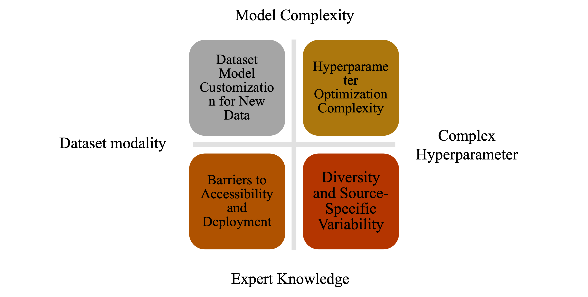
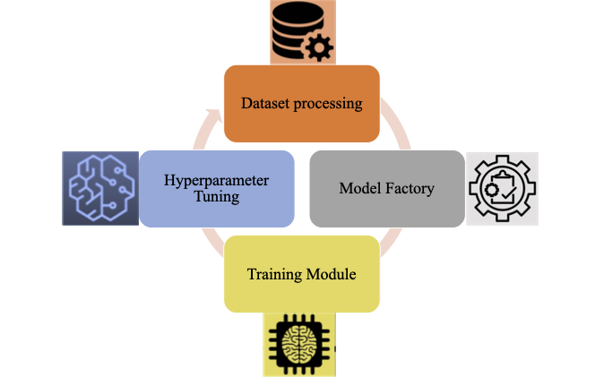
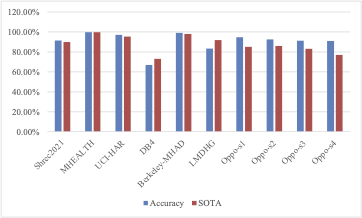
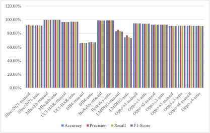

Key challenges in motion recognition: (1) Dataset variability across different sensor types increases preprocessing complexity, (2) Model adaptation requires dataset-specific optimizations, leading to high computational costs, (3) Hyperparameter tuning demands expertise and computational resources, and (4) Deployment barriers limit accessibility for non-specialists. These challenges highlight the need for a scalable and automated framework.

AutoMR end-to-end architecture, illustrating the complete workflow from data preprocessing to model training and hyperparameter tuning. The framework standardizes diverse datasets, selects optimal model configurations, and ensures efficient training and deployment for motion recognition across different sensor modalities.

AutoMR's modular and hierarchical architecture, illustrating the interaction between core modules and dataset-specific training scripts. The upper layer consists of fundamental components for dataset preprocessing, augmentation, model selection, training, and hyperparameter tuning, ensuring a standardized and optimized workflow. The lower layer contains dataset-specific execution scripts that utilize these core modules for model training on individual datasets, enabling efficient adaptation across diverse sensor modalities.

Overall accuracy comparison between AutoMR and SOTA models across ten datasets. AutoMR achieves superior performance on eight datasets, highlighting its effectiveness in generalizing across diverse gesture recognition tasks.

Ablation study comparing automatic and manual hyperparameter tuning across four key metrics: accuracy, precision, recall, and F1-score. The results show that AutoMR’s automatic tuning achieves performance comparable to manual tuning, demonstrating its reliability for real-world applications.
BibTeX
BibTex Code Here